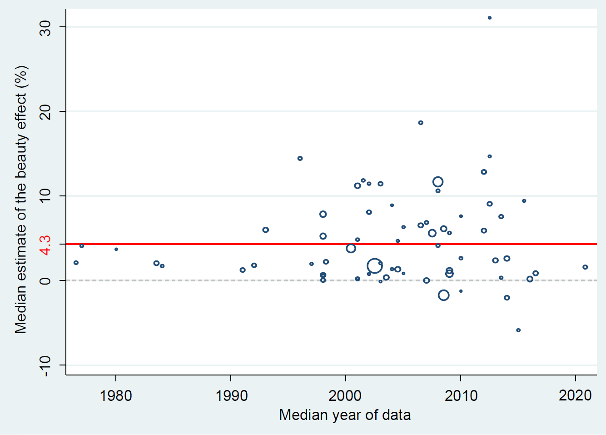

Abstract
Common wisdom suggests that beauty helps in the labor market. We show that two factors combine to explain away most of the mean beauty premium reported in the literature. First, correcting for publication bias reduces the premium by at least a third. Second, controlling for cognitive ability renders the premium small (mean = 1.1%; 95% CrI = -0.8%, 3.0%) for all occupations except sex workers, where appearance is a direct input. The beauty premium is similar for earnings and productivity, a fact inconsistent with discrimination based on employer tastes for beauty. We find little evidence of attenuation bias that could offset publication and omitted-variable biases. To obtain these results we collect 1,159 estimates of the beauty premium in 67 studies and codify 35 aspects that reflect estimation context. We employ recently developed techniques to account for publication bias and model uncertainty.

Reference: Zuzana Irsova, Tomas Havranek, Kseniya Bortnikova, František Bartoš (2025), "Meta-Analysis of Field Studies on Beauty and Professional Success." Charles University, Prague. Available at meta-analysis.cz/beauty.
Headline result
Beauty premium in earnings: the meta-analytic estimate is 1.1% (95% CrI -0.8% to 3.0%; controlling for cognitive ability; large only for sex workers), based on 1,159 estimates in 67 studies (Irsova et al. 2025).
How to cite
Zuzana Irsova, Tomas Havranek, Kseniya Bortnikova, František Bartoš (2025), "Meta-Analysis of Field Studies on Beauty and Professional Success." Charles University, Prague. Available at meta-analysis.cz/beauty.
BibTeX
@misc{irsova2025beauty,
author = {Zuzana Irsova and Tomas Havranek and Kseniya Bortnikova and František Bartoš},
title = {Meta-Analysis of Field Studies on Beauty and Professional Success},
year = {2025},
}